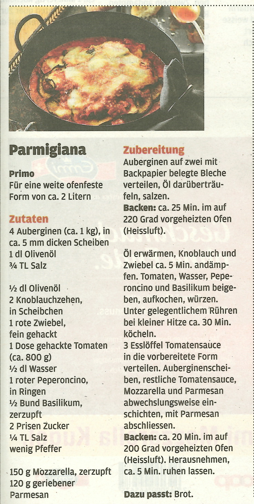

img only Parmigiana Auberginen

Zutaten
- 3 Auberginen
- 500 g passierte Tomaten
- 2 Knoblauchzehen
- 1 Zwiebel
- 150 g geriebener Parmesan
- 150 g Mozzarella
- Olivenöl
- Salz und Pfeffer
Zubereitung
- Die Auberginen waschen und in ca. 1 cm dicke Scheiben schneiden.
- Die Auberginenscheiben mit etwas Salz bestreuen und für etwa 30 Minuten beiseitelegen, um die Bitterstoffe zu entfernen.
- In der Zwischenzeit den Knoblauch und die Zwiebel schälen und fein hacken.
- Das Olivenöl in einer Pfanne erhitzen und den Knoblauch und die Zwiebel darin anschwitzen.
- Die passierten Tomaten hinzufügen und mit Salz und Pfeffer abschmecken. Die Sauce für ca. 10 Minuten köcheln lassen.
- Die Auberginenscheiben abspülen und trocken tupfen.
- Eine Auflaufform mit Olivenöl einfetten und abwechselnd eine Schicht Auberginen, Sauce, geriebenen Parmesan und Mozzarella schichten.
- Den Backofen auf 180°C vorheizen und die Parmigiana Auberginen für ca. 1 Stunde backen, bis der Käse goldbraun ist.
- Die Parmigiana Auberginen aus dem Ofen nehmen und für ca. 10 Minuten abkühlen lassen, bevor sie serviert werden.